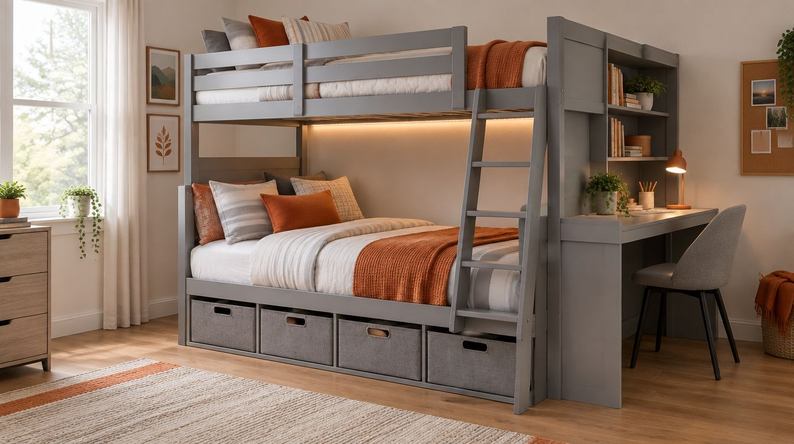
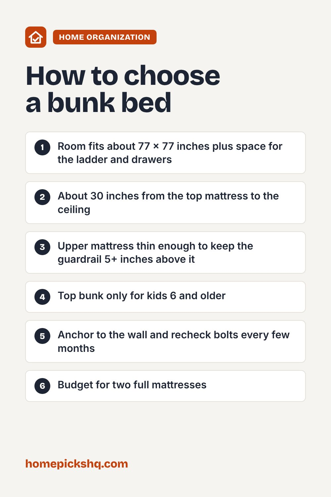

ADORNEVE Full-Over-Full Bunk Bed with Desk: Specs, Pros, Cons and Safety Checks

How we write these guides: we research manufacturer specifications, expert guidance, and owner feedback. We do not claim to have lab-tested every product. Links to Amazon on this page are affiliate links; see our disclosure.
A full-over-full bunk bed puts two full-size beds in the floor space of one, which makes it a strong fit for siblings sharing a room, teens, or a guest room that has to do double duty. The ADORNEVE model adds a side desk with a charging station, four fabric drawers, two open shelves and app-controlled LED lights. Here is what those features mean, the safety checks that matter most with any bunk bed, and who this one suits. We have not tested this bed ourselves; details come from the manufacturer's listing and standard bunk bed safety guidance.
ADORNEVE Full Over Full Bunk Bed with Desk & 4 Storage Drawers (Grey)
| Size | Full over full (two full mattresses, sold separately) |
|---|---|
| Footprint | 76.8" L x 77.6" W x 72" H, desk included |
| Storage | 4 fabric drawers, 2 open shelves |
| Desk | Side desk with charging station: 2 AC outlets, 1 USB, 1 USB-C |
| Lights | RGB LED strips, app control, music sync |
| Guardrail | Full-length, 13.4" high on the top bunk |
| Materials | Engineered wood (MDF), metal, fabric, faux leather |
| Listed max weight | 500 lb (check the manual for the per-bunk limit) |
Pros
- Two full-size beds plus a desk and drawers in one footprint
- Charging station at the desk means fewer cords running across the room
- Full-length guardrail and padded ladder
- Drawers and shelves replace a separate dresser in small rooms
- Fun LED lighting that teens tend to like
Cons
- Large footprint, about 6.5 by 6.5 feet, and 6 feet tall
- Mattresses are not included, and the top one must be thin enough for the guardrail
- Engineered wood and fabric drawers are not as tough as solid wood
- Ships in two boxes and takes real assembly time
- Top bunks are not for children under 6
Check price on AmazonPrice and availability change often. As an Amazon Associate I earn from qualifying purchases.
Who it's for
This bed suits two older kids or teens sharing a room, a guest room that needs to sleep more people, or a small apartment where floor space matters. If your kids are young, or you need a bed for a toddler, look at a low twin or a floor bed instead. If only one person sleeps in the room, a loft bed with a desk underneath may be a better use of space.
Measure the room first
Check floor space, about 77 by 77 inches with the desk, plus room for the ladder and drawers to open. Then check ceiling height. Whoever sleeps on top needs room to sit up, so measure from the top of the upper mattress to the ceiling and aim for about 30 inches or more. In rooms with ceilings under 8 feet, that can get tight.
Bunk bed safety basics
The US safety rule for bunk beds calls for the top of the guardrail to sit at least 5 inches above the top of the mattress. With a 13.4-inch rail, that means a fairly thin upper mattress, so check the manual for the maximum thickness before you buy one.
Keep children under 6 off the top bunk. Anchor the bed to the wall with the included hardware, keep it away from ceiling fans and window cords, and check the bolts every few months, since wood beds can loosen over time.
The extras
The desk's charging station has two standard outlets plus USB and USB-C, which helps with phones, a lamp or a laptop. Treat it like any power strip: do not overload it, and keep bedding from bunching around it. The LED lights are app-controlled with music sync; they are a nice touch but not a reason to pick a bed on their own.
Quick buying checklist
- Room fits about 77 x 77 inches plus space for the ladder and drawers
- About 30 inches from the top mattress to the ceiling
- Upper mattress thin enough to keep the guardrail 5+ inches above it
- Top bunk only for kids 6 and older
- Anchor to the wall and recheck bolts every few months
- Budget for two full mattresses
Check price on AmazonUse the checklist above to compare options. As an Amazon Associate I earn from qualifying purchases.

Frequently asked questions
Are mattresses included?
No. The listing includes the frame, desk, drawers, charging station, lights and shelves. You will need two full-size mattresses, and the top one must be thin enough for the guardrail.
How thick can the top mattress be?
Check the manual for the maker's limit. As a rule of thumb, the guardrail top should be at least 5 inches above the mattress, so with a 13.4-inch rail a thinner mattress is the safer choice.
Can adults use this bunk bed?
The listing gives a 500 lb maximum and says it suits teens and adults in compact spaces. Check the manual for the limit on each bunk before an adult uses the top.
How hard is assembly?
It ships in two boxes with tools and instructions. Plan on a few hours with two people, and do not skip the wall anchors.